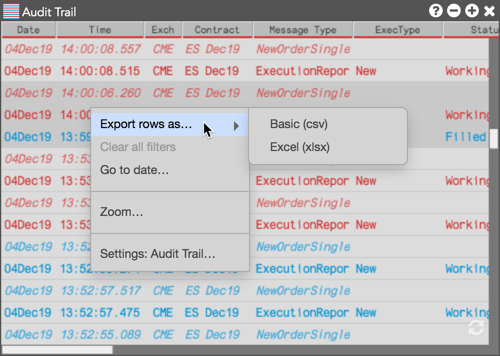

  
  <p class="">You can also export Audit Trail rows to a <b>.csv</b> or <b>.xlsx</b> file. Select the rows you want to export, right-click in the selection, and click the
  the <b>Export Rows as...</b> context menu that appears. The selected fills are exported to a .csv or .xlsx file in your computer's download folder.</p>
  
  </img>
